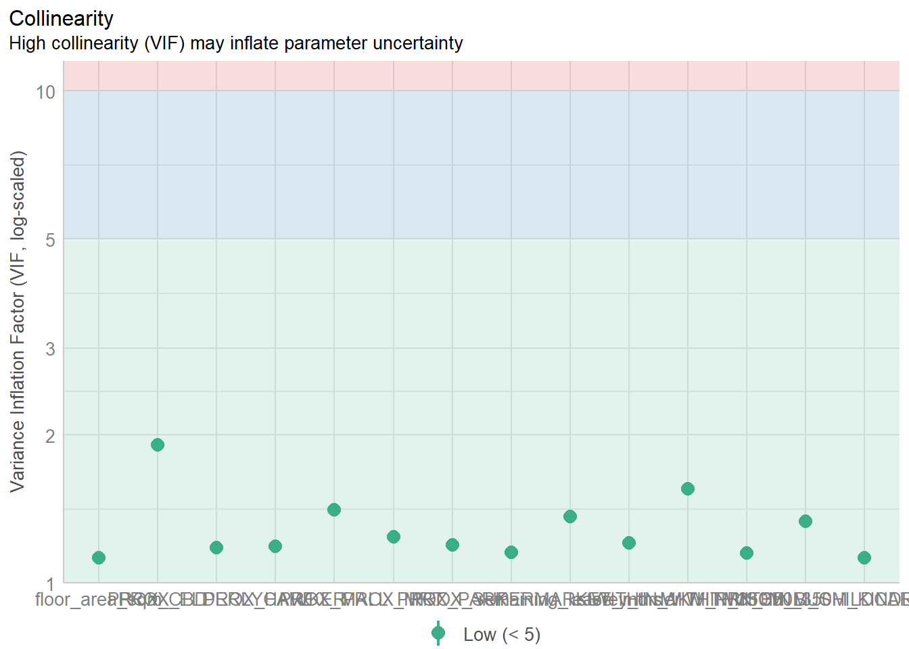

pacman::p_load(sf, spdep, GWmodel, SpatialML,
tmap, rsample, Metrics, tidyverse,
knitr)In-class Exercise 8: Geographically Weighted Predictive Models
mdata <- read_rds("data/mdata.rds")1. Data Sampling
The entire data are split into training and test data sets with 65% and 35% respectively by using inital_split() of rsample package. rsample is one of the package of tigymodels.
set.seed(1234)
resale_split <- initial_split(mdata,
prop = 6.5/10,)
train_data <- training(resale_split)
test_data <- testing(resale_split)2. Multicollinearity check
2.1 Correlation Matrix
mdata_nogeo <- mdata %>%
st_drop_geometry()
ggstatsplot::ggcorrmat(mdata_nogeo[, 2:17])
When building a predictive model, use only the training data for calibration, and later use the test data for evaluation. For an explanatory model, you can use all the data.
price_mlr <- lm(resale_price ~ floor_area_sqm +
storey_order + remaining_lease_mths +
PROX_CBD + PROX_ELDERLYCARE + PROX_HAWKER +
PROX_MRT + PROX_PARK + PROX_MALL +
PROX_SUPERMARKET + WITHIN_350M_KINDERGARTEN +
WITHIN_350M_CHILDCARE + WITHIN_350M_BUS +
WITHIN_1KM_PRISCH,
data=train_data)
summary(price_mlr)
Call:
lm(formula = resale_price ~ floor_area_sqm + storey_order + remaining_lease_mths +
PROX_CBD + PROX_ELDERLYCARE + PROX_HAWKER + PROX_MRT + PROX_PARK +
PROX_MALL + PROX_SUPERMARKET + WITHIN_350M_KINDERGARTEN +
WITHIN_350M_CHILDCARE + WITHIN_350M_BUS + WITHIN_1KM_PRISCH,
data = train_data)
Residuals:
Min 1Q Median 3Q Max
-205193 -39120 -1930 36545 472355
Coefficients:
Estimate Std. Error t value Pr(>|t|)
(Intercept) 107601.073 10601.261 10.150 < 2e-16 ***
floor_area_sqm 2780.698 90.579 30.699 < 2e-16 ***
storey_order 14299.298 339.115 42.167 < 2e-16 ***
remaining_lease_mths 344.490 4.592 75.027 < 2e-16 ***
PROX_CBD -16930.196 201.254 -84.124 < 2e-16 ***
PROX_ELDERLYCARE -14441.025 994.867 -14.516 < 2e-16 ***
PROX_HAWKER -19265.648 1273.597 -15.127 < 2e-16 ***
PROX_MRT -32564.272 1744.232 -18.670 < 2e-16 ***
PROX_PARK -5712.625 1483.885 -3.850 0.000119 ***
PROX_MALL -14717.388 2007.818 -7.330 2.47e-13 ***
PROX_SUPERMARKET -26881.938 4189.624 -6.416 1.46e-10 ***
WITHIN_350M_KINDERGARTEN 8520.472 632.812 13.464 < 2e-16 ***
WITHIN_350M_CHILDCARE -4510.650 354.015 -12.741 < 2e-16 ***
WITHIN_350M_BUS 813.493 222.574 3.655 0.000259 ***
WITHIN_1KM_PRISCH -8010.834 491.512 -16.298 < 2e-16 ***
---
Signif. codes: 0 '***' 0.001 '**' 0.01 '*' 0.05 '.' 0.1 ' ' 1
Residual standard error: 61650 on 10320 degrees of freedom
Multiple R-squared: 0.7373, Adjusted R-squared: 0.737
F-statistic: 2069 on 14 and 10320 DF, p-value: < 2.2e-16olsrr::ols_regress(price_mlr) # analyze a multiple linear regression model stored in price_mlr Model Summary
--------------------------------------------------------------------------
R 0.859 RMSE 61604.120
R-Squared 0.737 MSE 3800583670.022
Adj. R-Squared 0.737 Coef. Var 14.193
Pred R-Squared 0.737 AIC 257320.224
MAE 47485.556 SBC 257436.117
--------------------------------------------------------------------------
RMSE: Root Mean Square Error
MSE: Mean Square Error
MAE: Mean Absolute Error
AIC: Akaike Information Criteria
SBC: Schwarz Bayesian Criteria
ANOVA
--------------------------------------------------------------------------------
Sum of
Squares DF Mean Square F Sig.
--------------------------------------------------------------------------------
Regression 1.100899e+14 14 7.863561e+12 2069.04 0.0000
Residual 3.922202e+13 10320 3800583670.022
Total 1.493119e+14 10334
--------------------------------------------------------------------------------
Parameter Estimates
------------------------------------------------------------------------------------------------------------------
model Beta Std. Error Std. Beta t Sig lower upper
------------------------------------------------------------------------------------------------------------------
(Intercept) 107601.073 10601.261 10.150 0.000 86820.546 128381.599
floor_area_sqm 2780.698 90.579 0.164 30.699 0.000 2603.146 2958.251
storey_order 14299.298 339.115 0.234 42.167 0.000 13634.567 14964.029
remaining_lease_mths 344.490 4.592 0.442 75.027 0.000 335.489 353.490
PROX_CBD -16930.196 201.254 -0.586 -84.124 0.000 -17324.693 -16535.700
PROX_ELDERLYCARE -14441.025 994.867 -0.079 -14.516 0.000 -16391.157 -12490.893
PROX_HAWKER -19265.648 1273.597 -0.083 -15.127 0.000 -21762.144 -16769.151
PROX_MRT -32564.272 1744.232 -0.105 -18.670 0.000 -35983.305 -29145.240
PROX_PARK -5712.625 1483.885 -0.021 -3.850 0.000 -8621.328 -2803.922
PROX_MALL -14717.388 2007.818 -0.044 -7.330 0.000 -18653.100 -10781.675
PROX_SUPERMARKET -26881.938 4189.624 -0.035 -6.416 0.000 -35094.414 -18669.462
WITHIN_350M_KINDERGARTEN 8520.472 632.812 0.072 13.464 0.000 7280.038 9760.905
WITHIN_350M_CHILDCARE -4510.650 354.015 -0.074 -12.741 0.000 -5204.589 -3816.711
WITHIN_350M_BUS 813.493 222.574 0.020 3.655 0.000 377.205 1249.781
WITHIN_1KM_PRISCH -8010.834 491.512 -0.102 -16.298 0.000 -8974.293 -7047.376
------------------------------------------------------------------------------------------------------------------2.2 Multicollinearity check with VIF
vif <-performance::check_collinearity(price_mlr)
kable(vif,
caption = "Variance Inflation Factor (VIF) Results") #%>%| Term | VIF | VIF_CI_low | VIF_CI_high | SE_factor | Tolerance | Tolerance_CI_low | Tolerance_CI_high |
|---|---|---|---|---|---|---|---|
| floor_area_sqm | 1.126308 | 1.104360 | 1.152871 | 1.061276 | 0.8878567 | 0.8673997 | 0.9055016 |
| storey_order | 1.206586 | 1.181102 | 1.235657 | 1.098447 | 0.8287846 | 0.8092862 | 0.8466672 |
| remaining_lease_mths | 1.363528 | 1.331762 | 1.398335 | 1.167702 | 0.7333919 | 0.7151363 | 0.7508850 |
| PROX_CBD | 1.905054 | 1.852553 | 1.960788 | 1.380237 | 0.5249196 | 0.5099991 | 0.5397957 |
| PROX_ELDERLYCARE | 1.178400 | 1.154108 | 1.206522 | 1.085541 | 0.8486080 | 0.8288284 | 0.8664703 |
| PROX_HAWKER | 1.187828 | 1.163132 | 1.216262 | 1.089875 | 0.8418729 | 0.8221915 | 0.8597474 |
| PROX_MRT | 1.240457 | 1.213579 | 1.270718 | 1.113758 | 0.8061545 | 0.7869568 | 0.8240092 |
| PROX_PARK | 1.195883 | 1.170847 | 1.224588 | 1.093564 | 0.8362021 | 0.8166011 | 0.8540825 |
| PROX_MALL | 1.409846 | 1.376277 | 1.446409 | 1.187369 | 0.7092975 | 0.6913675 | 0.7265978 |
| PROX_SUPERMARKET | 1.154751 | 1.131493 | 1.182124 | 1.074594 | 0.8659873 | 0.8459353 | 0.8837880 |
| WITHIN_350M_KINDERGARTEN | 1.125809 | 1.103886 | 1.152360 | 1.061042 | 0.8882499 | 0.8677846 | 0.9058910 |
| WITHIN_350M_CHILDCARE | 1.335594 | 1.304923 | 1.369351 | 1.155679 | 0.7487304 | 0.7302729 | 0.7663289 |
| WITHIN_350M_BUS | 1.148544 | 1.125564 | 1.175729 | 1.071701 | 0.8706679 | 0.8505364 | 0.8884435 |
| WITHIN_1KM_PRISCH | 1.550879 | 1.511876 | 1.592853 | 1.245343 | 0.6447958 | 0.6278044 | 0.6614298 |
#kable_styling(font_size = 18)Anything below 5 is acceptable.
plot(vif)Variable `Component` is not in your data frame :/
theme(axis.text.x = element_text(angle = 45, hjust = 1))List of 1
$ axis.text.x:List of 11
..$ family : NULL
..$ face : NULL
..$ colour : NULL
..$ size : NULL
..$ hjust : num 1
..$ vjust : NULL
..$ angle : num 45
..$ lineheight : NULL
..$ margin : NULL
..$ debug : NULL
..$ inherit.blank: logi FALSE
..- attr(*, "class")= chr [1:2] "element_text" "element"
- attr(*, "class")= chr [1:2] "theme" "gg"
- attr(*, "complete")= logi FALSE
- attr(*, "validate")= logi TRUE3. Predictive Modelling with MLR
3.1 Computing adaptive bandwidth
You only need to run it once, save the result, and load it back in without rendering. The output is all that’s needed to fit into GWR.
bw_adaptive <- bw.gwr(resale_price ~ floor_area_sqm +
storey_order + remaining_lease_mths +
PROX_CBD + PROX_ELDERLYCARE + PROX_HAWKER +
PROX_MRT + PROX_PARK + PROX_MALL +
PROX_SUPERMARKET + WITHIN_350M_KINDERGARTEN +
WITHIN_350M_CHILDCARE + WITHIN_350M_BUS +
WITHIN_1KM_PRISCH,
data=train_data, #Use the training data instead of the full dataset.
approach="CV",
kernel="gaussian",
adaptive=TRUE,
longlat=FALSE)When calibrating the model, use bw_adaptive.
Multicollinearity check with VIF
gwr_adaptive <- gwr.basic(formula = resale_price ~
floor_area_sqm + storey_order +
remaining_lease_mths + PROX_CBD +
PROX_ELDERLYCARE + PROX_HAWKER +
PROX_MRT + PROX_PARK + PROX_MALL +
PROX_SUPERMARKET + WITHIN_350M_KINDERGARTEN +
WITHIN_350M_CHILDCARE + WITHIN_350M_BUS +
WITHIN_1KM_PRISCH,
data=train_data, #use training data
bw=bw_adaptive,
kernel = 'gaussian',
adaptive=TRUE,
longlat = FALSE)gwr_bw_test_adaptive <- bw.gwr(resale_price ~ floor_area_sqm +
storey_order + remaining_lease_mths +
PROX_CBD + PROX_ELDERLYCARE + PROX_HAWKER +
PROX_MRT + PROX_PARK + PROX_MALL +
PROX_SUPERMARKET + WITHIN_350M_KINDERGARTEN +
WITHIN_350M_CHILDCARE + WITHIN_350M_BUS +
WITHIN_1KM_PRISCH,
data=test_data,
approach="CV",
kernel="gaussian",
adaptive=TRUE,
longlat=FALSE)test_data_sp <- test_data %>%
as_Spatial()
test_data_spclass : SpatialPointsDataFrame
features : 5566
extent : 11597.31, 42623.63, 28287.8, 48669.59 (xmin, xmax, ymin, ymax)
crs : +proj=tmerc +lat_0=1.36666666666667 +lon_0=103.833333333333 +k=1 +x_0=28001.642 +y_0=38744.572 +ellps=WGS84 +towgs84=0,0,0,0,0,0,0 +units=m +no_defs
variables : 17
names : resale_price, floor_area_sqm, storey_order, remaining_lease_mths, PROX_CBD, PROX_ELDERLYCARE, PROX_HAWKER, PROX_MRT, PROX_PARK, PROX_GOOD_PRISCH, PROX_MALL, PROX_CHAS, PROX_SUPERMARKET, WITHIN_350M_KINDERGARTEN, WITHIN_350M_CHILDCARE, ...
min values : 230888, 74, 1, 546, 1.00583660772922, 3.34897933104965e-07, 0.0474019664161957, 0.0414043955932523, 0.0502664084494264, 0.0907500295577619, 0, 4.55547870890763e-09, 1.21715176356525e-07, 0, 0, ...
max values : 1050000, 138, 14, 1151, 19.632402730488, 3.30163731686804, 2.83106651960209, 2.13060636038504, 2.41313695915468, 10.6169590126272, 2.26056404492346, 0.79249074802552, 1.53786629004208, 7, 16, ... train_data_sp <- as_Spatial(train_data)
train_data_spclass : SpatialPointsDataFrame
features : 10335
extent : 11597.31, 42623.63, 28217.39, 48741.06 (xmin, xmax, ymin, ymax)
crs : +proj=tmerc +lat_0=1.36666666666667 +lon_0=103.833333333333 +k=1 +x_0=28001.642 +y_0=38744.572 +ellps=WGS84 +towgs84=0,0,0,0,0,0,0 +units=m +no_defs
variables : 17
names : resale_price, floor_area_sqm, storey_order, remaining_lease_mths, PROX_CBD, PROX_ELDERLYCARE, PROX_HAWKER, PROX_MRT, PROX_PARK, PROX_GOOD_PRISCH, PROX_MALL, PROX_CHAS, PROX_SUPERMARKET, WITHIN_350M_KINDERGARTEN, WITHIN_350M_CHILDCARE, ...
min values : 218000, 74, 1, 555, 0.999393538715878, 1.98943787433087e-08, 0.0333358643817954, 0.0220407324774434, 0.0441643212802781, 0.0652540365486641, 0, 6.20621206270077e-09, 1.21715176356525e-07, 0, 0, ...
max values : 1186888, 133, 17, 1164, 19.6500691667807, 3.30163731686804, 2.86763031236184, 2.13060636038504, 2.41313695915468, 10.6223726149914, 2.27100643784442, 0.808332738794272, 1.57131703651196, 7, 20, ... Use a bandwidth of 40, the same as the training data.
gwr_pred <- gwr.predict(formula = resale_price ~
floor_area_sqm + storey_order +
remaining_lease_mths + PROX_CBD +
PROX_ELDERLYCARE + PROX_HAWKER +
PROX_MRT + PROX_PARK + PROX_MALL +
PROX_SUPERMARKET + WITHIN_350M_KINDERGARTEN +
WITHIN_350M_CHILDCARE + WITHIN_350M_BUS +
WITHIN_1KM_PRISCH,
data=train_data_sp,
predictdata = test_data_sp,
bw=40,
kernel = 'gaussian',
adaptive=TRUE,
p = 2,
theta = 0,
longlat = FALSE)4. Predictive Modelling: SpatialML methods
4.1 Preparing coordinate data
coords <- st_coordinates(mdata)
coords_train <- st_coordinates(train_data)
coords_test <- st_coordinates(test_data)4.2 Dropping geometry field
train_data_nogeom <- train_data %>%
st_drop_geometry # convert simpleframe to dataframe4.3 Calibrating RF model
set.seed(1234)
rf <- ranger(resale_price ~ floor_area_sqm + storey_order +
remaining_lease_mths + PROX_CBD + PROX_ELDERLYCARE +
PROX_HAWKER + PROX_MRT + PROX_PARK + PROX_MALL +
PROX_SUPERMARKET + WITHIN_350M_KINDERGARTEN +
WITHIN_350M_CHILDCARE + WITHIN_350M_BUS +
WITHIN_1KM_PRISCH,
data=train_data_nogeom)
rfRanger result
Call:
ranger(resale_price ~ floor_area_sqm + storey_order + remaining_lease_mths + PROX_CBD + PROX_ELDERLYCARE + PROX_HAWKER + PROX_MRT + PROX_PARK + PROX_MALL + PROX_SUPERMARKET + WITHIN_350M_KINDERGARTEN + WITHIN_350M_CHILDCARE + WITHIN_350M_BUS + WITHIN_1KM_PRISCH, data = train_data_nogeom)
Type: Regression
Number of trees: 500
Sample size: 10335
Number of independent variables: 14
Mtry: 3
Target node size: 5
Variable importance mode: none
Splitrule: variance
OOB prediction error (MSE): 728602496
R squared (OOB): 0.9495728 4.4 Calibrating with grf()
set.seed(1234)
gwRF_adaptive <- grf(formula = resale_price ~ floor_area_sqm + storey_order +
remaining_lease_mths + PROX_CBD + PROX_ELDERLYCARE +
PROX_HAWKER + PROX_MRT + PROX_PARK + PROX_MALL +
PROX_SUPERMARKET + WITHIN_350M_KINDERGARTEN +
WITHIN_350M_CHILDCARE + WITHIN_350M_BUS +
WITHIN_1KM_PRISCH,
dframe = train_data_nogeom,
bw = 55,
kernel = "adaptive",
coords = coords_train)
Number of Observations: 10335Number of Independent Variables: 14Kernel: Adaptive
Neightbours: 55
--------------- Global ML Model Summary ---------------Ranger result
Call:
ranger(resale_price ~ floor_area_sqm + storey_order + remaining_lease_mths + PROX_CBD + PROX_ELDERLYCARE + PROX_HAWKER + PROX_MRT + PROX_PARK + PROX_MALL + PROX_SUPERMARKET + WITHIN_350M_KINDERGARTEN + WITHIN_350M_CHILDCARE + WITHIN_350M_BUS + WITHIN_1KM_PRISCH, data = train_data_nogeom, num.trees = 500, mtry = 4, importance = "impurity", num.threads = NULL)
Type: Regression
Number of trees: 500
Sample size: 10335
Number of independent variables: 14
Mtry: 4
Target node size: 5
Variable importance mode: impurity
Splitrule: variance
OOB prediction error (MSE): 700081018
R squared (OOB): 0.9515468
Importance: floor_area_sqm storey_order remaining_lease_mths
7.376510e+12 1.413229e+13 2.991844e+13
PROX_CBD PROX_ELDERLYCARE PROX_HAWKER
5.312697e+13 7.017513e+12 5.506719e+12
PROX_MRT PROX_PARK PROX_MALL
7.446857e+12 4.825986e+12 4.173165e+12
PROX_SUPERMARKET WITHIN_350M_KINDERGARTEN WITHIN_350M_CHILDCARE
2.879598e+12 1.028775e+12 1.701318e+12
WITHIN_350M_BUS WITHIN_1KM_PRISCH
1.564038e+12 7.214027e+12
Mean Square Error (Not OOB): 173279991.32R-squared (Not OOB) %: 98.801AIC (Not OOB): 196089.283AICc (Not OOB): 196089.33
--------------- Local Model Summary ---------------
Residuals OOB: Min. 1st Qu. Median Mean 3rd Qu. Max.
-236112.0 -13033.7 444.4 593.8 14831.5 358041.7
Residuals Predicted (Not OOB): Min. 1st Qu. Median Mean 3rd Qu. Max.
-79279.83 -3510.70 54.56 50.98 3909.85 83074.08
Local Variable Importance: Min Max Mean StD
floor_area_sqm 0 401562922035 18210850992 41426270899
storey_order 302736445 243728744368 16368419468 23620589843
remaining_lease_mths 696564138 546463600727 34119912443 70328183398
PROX_CBD 55173040 382484896335 12154563393 29293290548
PROX_ELDERLYCARE 45182031 344081962746 10597657883 24546405941
PROX_HAWKER 43516026 342597797419 10551807020 23408387903
PROX_MRT 54234551 299075025906 9873129985 21055852211
PROX_PARK 49919822 322633843469 9353956995 19517077658
PROX_MALL 43296133 433263607933 11247374493 27537334970
PROX_SUPERMARKET 52665827 417310417234 10802122271 26572460731
WITHIN_350M_KINDERGARTEN 0 186468064682 2848177740 12928886968
WITHIN_350M_CHILDCARE 0 255236737234 5526292324 18109971102
WITHIN_350M_BUS 0 193828795378 4747552546 11886064288
WITHIN_1KM_PRISCH 0 178360608427 1778262602 7163381668
Mean squared error (OOB): 930426169.333R-squared (OOB) %: 93.56AIC (OOB): 213459.669AICc (OOB): 213459.716Mean squared error Predicted (Not OOB): 73859413.696R-squared Predicted (Not OOB) %: 99.489AIC Predicted (Not OOB): 187276.161AICc Predicted (Not OOB): 187276.208
Calculation time (in seconds): 5.96215. Predicting by using the test data
5.1 Preparing the test data
test_data_nogeom <- cbind(
test_data, coords_test) %>%
st_drop_geometry()Note that the testing data has no geometry. If you ignore the previous step, you won’t obtain the x and y coordinates. If you do not combine it with coords_test, which contains the x and y coordinates, you will not be able to retrieve the x and y for this step.
5.2 Predicting with the test data
gwRF_pred <- predict.grf(gwRF_adaptive,
test_data_nogeom,
x.var.name="X",
y.var.name = "Y",
local.w = 1,
global.w = 0)5.3 Creating DF
GRF_pred <- read_rds("data/GRF_pred.rds")
GRF_pred_df <- as.data.frame(GRF_pred)
test_data_pred <- cbind(test_data, GRF_pred_df)6. Root Mean Square Error (RMSE)
You can calculate the Root Mean Square Error (RMSE) or plot the results. However, the previous code must be executed, otherwise, you won’t be able to make a valid comparison.
rmse(test_data_p$resale_price,
test_data_p$GRF_pred)ggplot(data = test_data_p,
aes(x = GRF_pred,
y = resale_price)) +
geom_point()